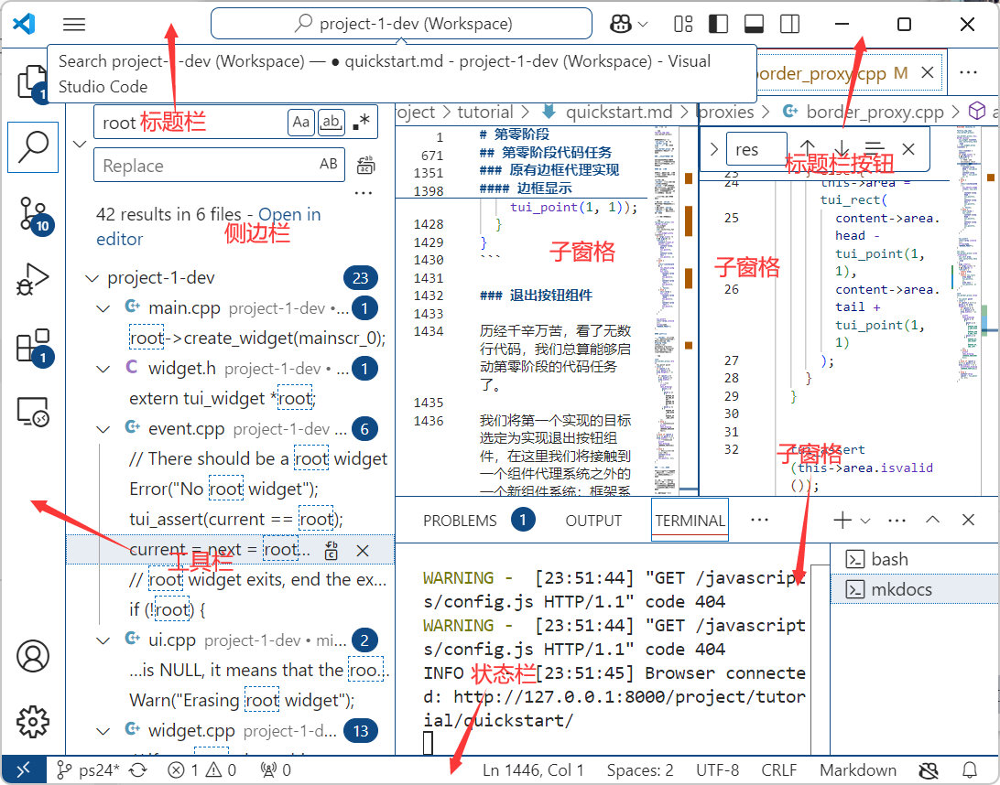
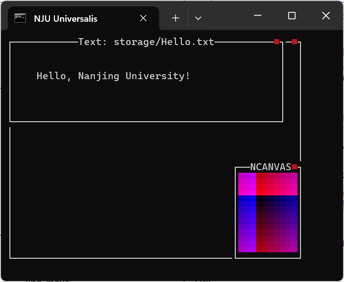

第一阶段¶
引入¶
在第零阶段中，你已经配置好了项目运行的必要环境并进行了测试。
现在我们来藉由实现一个小功能来了解框架代码的原理和实现。
任务描述¶
本阶段的代码任务的目的是改进 border_proxy 类的功能（定义在 minitui/*/proxies/ 中）。
具体来说，要达成如下效果：
- 支持边框在所属组件被鼠标悬停于其上时/成为焦点组件时高亮。
- 支持在边框右上角添加一个退出按钮子组件。该组件显示为一个红色的 ▀ (
\u25a0) 符号，同样应在鼠标悬停在其上时高亮，并在被点击时使得其所在组件退出。
实现示例视频如下：
当然，直接实现可能是比较困难的，因此我们把实现任务分成了四个子任务：
- 任务一：实现退出按钮组件类，能够将退出按钮作为窗口组件创建，并能在点击时退出。
- 任务二：将退出按钮作为子组件添加到边框右上角，能够正确显示为红色方块（不需要高亮），并正确响应点击（在点击按钮时退出）。
- 任务三（选做）：实现检测鼠标悬停/成为焦点功能，并实现退出按钮的鼠标悬停高亮/边框的悬停和焦点高亮功能。同时把
title的实现和exit_button进行调和。 - 任务四（选做）：改进
border_proxy类对于功能参数的解析，能够通过功能参数来控制边框是否创建退出按钮/是否在鼠标悬停或成为焦点时高亮。
当然，尽管做了如此分解，要完成第一阶段的代码任务，仅知道上一阶段介绍的内容是不够的，必须对代码框架有着更加深入的认识才行。
接下来我们就来讲讲。
组件代理系统入门¶
从 border_proxy 的定义开始¶
要改进 border_proxy（下称边框代理）类的实现，首先需要了解它原先的实现。
OK，让我们打开 proxies/border_proxy.h，看到：
struct tui_border_proxy : public tui_widget_proxy {
factory_reg(tui_border_proxy, "border");
tui_border_proxy(tui_widget *content, std::vector<tui_fmt> args=std::vector<tui_fmt>());
static tui_rect area_transform(tui_rect area, std::vector<tui_fmt> args=std::vector<tui_fmt>());
void draw(tui_point point) const override;
};
我们可以看到，该类继承自……tui_widget_proxy，这是个啥类？
OK，认命了，我们接着看这个类的定义吧。
struct tui_widget_proxy : public tui_widget {
factory_reg(tui_widget_proxy, "PROXY");
tui_widget *content;
tui_widget_proxy(tui_widget *content, std::vector<tui_fmt> args=std::vector<tui_fmt>());
static tui_rect area_transform(tui_rect area, std::vector<tui_fmt> args);
void draw(tui_point point) const override;
tui_event *on_event(tui_event *event) override;
tui_event *on_child_exit(tui_widget *child) override;
tui_widget *proxy() const override;
~tui_widget_proxy();
};
总算有我们看得懂的东西了：这个类继承自 tui_widget，看来它也是一个组件派生类。
而 tui_border_proxy 继承了它，说明其是一个在这个组件派生类上实现的一个具体组件。
仔细看看还可以发现 proxies/ 目录下的其他类都继承了 tui_widget_proxy。
这是一种多层继承的设计，tui_widget_proxy 既是具有 tui_widget 特征/接口的派生类，也是一系列二级派生类共同特征/接口的基类。
换句话说，tui_widget_proxy 本身代表的是一系列具体组件类，即 minitui 中的「组件代理」，而边框代理类 tui_border_proxy 则是组件代理类之一。
那么什么是组件代理呢？现在就来介绍 minitui 中组件代理的概念。
组件代理：装饰器模式¶
设想一个会输出全空的组件，就像这样：
void tui_some_widget::draw(tui_point point) const {
putchar(' ');
}
现在我们希望让它在边缘不输出空而输出 'X'，应该怎么做呢？
也许可以写出这样的代码：
void tui_some_widget::draw(tui_point point) const {
if (point.x == 0 || point.x == area.height() - 1) {
putchar('X');
return ;
}
if (point.y == 0 || point.y == area.width() - 1) {
putchar('X');
return ;
}
putchar(' ');
}
此时我们发现，对于任意组件，如果我们需要在它的边缘输出 'X'，都可以用一个类似的模式：
void tui_some_widget::draw(tui_point point) const {
if (point.x == 0 || point.x == area.height() - 1) {
putchar('X');
return ;
}
if (point.y == 0 || point.y == area.width() - 1) {
putchar('X');
return ;
}
// 进行原来的画图工作
// ...
}
当需要为一个现有组件添加上 'X' 边框时，可以按照这个套路修改其 draw() 方法。但当需要为多个组件添加 'X' 边框时，这样做就需要为每个组件重新写一遍相同的逻辑，不仅麻烦而且不灵活。
有什么办法能够将这段边框逻辑抽取出来，封装到单个实体中呢？
这就是组件代理要做的事情。 每个具体的组件代理类都封装了一段这样的功能逻辑，从而使其实例能够将该逻辑应用到被代理的组件上。
现在我们就能够看懂组件代理基类的定义了：
struct tui_widget_proxy : public tui_widget {
// 注册此组件代理的“功能名”，后面我们会看到它的用处
factory_reg(tui_widget_proxy, "PROXY");
tui_widget *content;
tui_widget_proxy(tui_widget *content, std::vector<tui_fmt> args=std::vector<tui_fmt>());
static tui_rect area_transform(tui_rect area, std::vector<tui_fmt> args);
void draw(tui_point point) const override;
tui_event *on_event(tui_event *event) override;
tui_event *on_child_exit(tui_widget *child) override;
tui_widget *proxy() const override;
~tui_widget_proxy();
};
首先，组件代理基类继承自组件类，也就是说它实现了组件的全部接口。
同时，它还具有一个 tui_widget * 类型的属性 content，这就是指向被代理组件的指针。
再看其构造函数，除了接受 content 指针外，其还能够接受一个字符串列表作为参数（列表）。
再来看看其重载的几个组件接口：
void
tui_widget_proxy::draw(
tui_point point
) const {
content->draw(point);
}
tui_event *
tui_widget_proxy::on_event(
tui_event *event
) {
return content->on_event(event);
}
tui_widget *
tui_widget_proxy::proxy() const {
return content;
}
tui_event *
tui_widget_proxy::on_child_exit(
tui_widget *child
) {
return content->on_child_exit(child);
}
可以看到，其接口实现就是调用其所代理组件的接口。
看到这里，你可能会问：这么实现有什么用？只是增加了一个中间层而已。
是时候回顾我们计算机科学的至理名言了：
一言
All problems in computer science can be solved by another level of indirection.
（计算机科学领域的所有问题都可以通过增加一个中间层解决）
因为我们能够在派生类中重载这个「中间层」的实现，事实上相当于我们能够在此层里拦截被代理组件的接口调用。
于是我们可以在调用被代理组件接口之前，之后进行一些处理，或者干脆不调用被代理组件接口而顶替掉这一调用。
因此，对应某具体功能的一个派生组件代理类的接口可以实现成这样：
auto tui_widget_proxy::some_interface() {
if (some_condition) {
// do something before calling content widget
auto content_res = content->some_interface();
// do something after calling content widget
// do something to the return value
return content_res;
} else {
// do something else
return what_i_want_to_return;
}
}
这种方法叫做钩子编程。运用钩子，可以使我们灵活地监视/修改已实现的程序功能。
钩子被广泛运用在调试，benchmarking，重定义系统 API，甚至游戏外挂等恶意程序中。
在面向对象的设计模式中，这种方法还有一个名字，叫做「装饰器模式」，这一名字更强调这种方法利用的「对象套对象」的模式。外层的对象被叫做「装饰器对象」。
在 minitui 中，我们将这些钩取、代理了内部组件接口的对象叫做「组件代理」。
现在，只要在调用接口时用组件代理替代掉被代理组件，就可以在组件上添加对应的功能。
如何给组件「套壳」：代理链¶
乍一看这个标题问的没啥意义：既然都已经有了代理类，直接新建一个代理对象，将被代理组件的指针传进去构造不就好了？然而这里还存在两个问题：
- 如果原组件已经被注册到窗口上了，新的组件代理需要替换原组件在窗口树和窗口管理器中的位置。同时还需要转交原组件和外部系统有关的属性给组件代理，我们把这些属性称作外部属性。
- 在套完壳之后，外部系统在只有外层组件代理指针的情况，怎么访问内部组件信息呢？内部组件又怎么访问到外层代理的信息呢？
对于第一个问题，我们已经在 tui_widget_proxy 的构造函数中实现了，具体细节这里不表。总之，它替换了窗口系统中原内层组件的位置（包括 root），同时将 parent、children 等外部属性转交给了外层代理。
为解决第二个问题，我们需要实现一个能从外部代理访问内部组件或反之的接口。
我们知道，每个代理都能够通过 content 来访问内层组件。但是由于我们处理组件时并不知道一个组件是不是一个代理组件（因为多态），所以我们需要在组件基类实现一个接口来判断，这就是 proxy() 接口。
我们来看基类对于此接口的实现：
// no proxy
tui_widget *
tui_widget::proxy() const {
return NULL;
}
再来对比 tui_widget_proxy 基类的实现：
tui_widget *
tui_widget_proxy::proxy() const {
return content;
}
可以发现只需要调用这个接口就可以判断组件是否是代理，且若是的话可以获取内部组件指针。
容易想到，有时候我们会进行组件代理的嵌套来加上多个功能，这在前面的例子中同样体现了。
于是，组件代理的嵌套事实上形成了一个链表状结构，我们叫它代理链。
这个链以组件为元素，以最外层组件为头部，以最内层非代理组件为尾部，以 proxy() 接口作为 next 指针。它满足链表的性质：从头部元素开始的 next 挨个接上了每个元素，尾部元素的 next 是 NULL。
同时请记住，在引入组件代理系统之后，外部系统处理的组件指针就都是代理链的头部组件（即最外层组件）了。 而每个这样的组件代表的是一整条组件链而不是单个组件——至少在内部实现上是这样的。
不过在逻辑上，虽然链上可能有众多组件，但当调用最外层组件的某个接口时，代理链上的所有组件都会按顺序参与接口处理（这个顺序有时比较重要，使用 set_attrs 时会决定这一顺序），使得它们整体看起来就像一个普通的组件一样——这就是代理链整体要向外提供的抽象。
现在回到正题，当外部系统希望获取某组件（代理链，下面不再区分）的最内层组件时，可以通过在代理链上递归来实现。
minitui 实现了组件的 proxy_penetrator 接口来实现这一功能。
// 返回代理链最内层组件
tui_widget *
tui_widget::proxy_penetrator() const {
// 还能往内走
if (this->proxy()) {
return this->proxy()->proxy_penetrator();
}
// 已经抵达末尾
return (tui_widget *) this;
}
进一步地，我们可以把部分外部系统对于组件外部属性的访问直接封装成接口，令其直接操作最内层组件的对应属性，这样可以做到不需移交组件的外部属性给外层组件。
例如 updated：
void set_updated() {
proxy_penetrator()->updated = true;
};
void reset_updated() {
proxy_penetrator()->updated = false;
};
bool get_updated() const {
return proxy_penetrator()->updated;
}
批判性思考：所以到底为什么要转交外部属性？
到这已经可以看出，将组件的外部属性交给外层代理组件的实现是不好的。
一个可能更好的实现方式是将其保留在最内层。因为随着外层代理的动态变化，外部属性需要反复在不同组件之间传递，比较麻烦而且容易出错。
最简单的例子是删除一个最外层代理，就需要将所有的外部属性转交给次外层的组件。
如果将所有外部属性全部保留在内部，只需要像对 updated 那样，封装获取外部属性的接口，并限制外部属性为私有，只从接口访问属性即可。
事已至此，我们还是来看看怎么为不良的设计擦屁股吧。
由于外部属性已经被转移到外部代理，内层组件在需要访问外部属性时也需要追溯到最外层代理。
因此，我们在组件中添加了 unproxy 属性，它会在组件被用于构造外层代理时自动指向外层代理。借此容易实现追溯到最外层代理的 unproxy_penetrator() 方法：
tui_widget *
tui_widget::unproxy_penetrator() const {
if (this->unproxy) {
return this->unproxy->unproxy_penetrator();
}
return (tui_widget *) this;
}
同理，可以将部分外部属性的访问直接封装成接口，来避免手动调用这个方法：
tui_widget *get_parent() const {
return unproxy_penetrator()->parent;
}
std::vector<tui_widget *> &get_children() const {
return unproxy_penetrator()->children;
}
牛刀小试："X" 边框¶
现在我们再回顾刚刚说的 "X" 边框功能，可以这样将它封装为一个组件代理类：
// 继承组件代理基类
struct tui_xborder_proxy : public tui_widget_proxy {
// 注册功能名为 "xborder"
factory_reg(tui_xborder_proxy, "xborder");
tui_xborder_proxy(tui_widget *content, std::vector<tui_fmt> args=std::vector<tui_fmt>());
void draw(tui_point point) const override;
};
tui_xborder_proxy::tui_xborder_proxy(
tui_widget *content,
std::vector<tui_fmt> args
) : tui_widget_proxy(content) {
// 大部分工作基类构造函数都已经做了
// 这里的处理很复杂，详见下一个小部分
// 需要注意边框组件需要比被代理组件大一圈
if (this->instaniated) {
// 如果已经被注册显示，需要调用 `tui_adjust_widget` 更新一下 `full_map`
// 注意最后一个 `false` 表示不递归改变嵌套的代理的 `area`
tui_adjust_widget(this, tui_rect(
content->area.head - tui_point(1, 1),
content->area.tail + tui_point(1, 1)
), false);
} else {
this->area = tui_rect(
content->area.head - tui_point(1, 1),
content->area.tail + tui_point(1, 1)
);
}
}
void tui_xborder_proxy::draw(tui_point point) const {
if (point.x == 0 || point.x == area.height() - 1) {
putchar('X');
return ;
}
if (point.y == 0 || point.y == area.width() - 1) {
putchar('X');
return ;
}
// 注意相对位置改变
content->draw(point - tui_point(1, 1));
}
这样，我们就终于成功将 "X" 边框逻辑封装到 tui_xborder_proxy 中了。
要使用这个功能，只需引用我们为它注册的功能名即可：
auto some_widget = new tui_some_widget(globel_rect);
some_widget->set_attrs({"xborder"});
代理机制下的 area 处理¶
我们知道 area 表示的是组件占据的矩形区域。
在大部分情况下，代理的 area 是和被代理组件一样的，这也是 tui_widget_proxy 组件的默认处理方式。
但是，可以注意到上面代码有非常复杂的关于 area 的处理，这是为什么呢？
首先，边框需要比内部组件大一圈，因此 tui_xborder_proxy 对象的 area 必须比 content 指向对象的 area 大一圈。
其次，在内部组件已经注册显示的情况下，基类构造函数会首先把边框代理自己即 this 替换上去，此时 instantiated 为 true。
这时,改变自己的 area 会使得 full_map 出现不同步的情况（增长的一圈的 full_map 没改），需要调用 tui_adjust_widget 接口。
这个接口是怎么实现的呢？为什么加了个 false 参数？RTFSC，马上来看看源码吧：
void
tui_adjust_widget(
tui_widget *widget,
tui_rect area,
bool proxy_penetrate // 默认是 `true`
) {
Debug("Adjusting widget %p %s", widget, widget->name);
tui_assert(widget->instaniated);
// 在 `full_map` 中清除掉这个组件
tui_update_full_map(widget, true);
// 修改 `area`
if (area != widget->area) {
if (proxy_penetrate) {
widget->reset_area(area);
} else {
widget->area = area;
}
}
// 在 `full_map` 中增加上这个组件
tui_update_full_map(widget);
return ;
}
注意到第三个参数为 true 的情况下会调用 reset_area 接口而不是直接修改 area，我们来看看这个接口的实现：
void
tui_widget::reset_area(
tui_rect area
) {
// 通知组件即将被修改 `area`
this->on_area_change(area);
// 若有内部组件，先对内部组件应用同样**相对**幅度的 `area` 修改。
if (this->proxy()) {
this->proxy()->reset_area(
tui_rect(
area.head + this->proxy()->area.head - this->area.head,
area.tail + this->proxy()->area.tail - this->area.tail
)
);
}
// 最终修改 `area`
this->area = area;
}
OK，现在我们终于懂了：
reset_area的功能是修改一个组件的area，同时将其代理链上的组件的area全部做对应修改。tui_adjust_widget的功能是修改一个已注册的组件的area，在proxy_penetrate为真的情况下，需要连着代理链一起修改，否则就只需要修改组件本身。- 调用
tui_adjust_widget的目的就是要调大作为已注册组件的边框代理的area，但是显然我们不需要连着内部代理链一起修改，所以把第三个参数设为false。
批判性思考：能不能避免这个特判
这个特判看起来很不优雅，我们能不能避免它？
一个方案是增加一个 set_area 接口来接管对组件 area 的修改：
void
tui_widget::set_area(
tui_rect area
bool penetrate=false // 修改应用在组件本身还是整个组件链上
) {
// 特判要不要更新 `full_map`
if (this->instaniated) {
// 更新 `full_map` 的同时更新 `area`
tui_adjust_widget(this, area, penetrate);
} else {
// 直接修改 `area`
if (penetrate) {
this->reset_area(area);
} else {
// 通知组件即将被修改 `area`
this->on_area_change(area);
this->area = area;
}
}
}
现在的逻辑就变为：
tui_widget::reset_area是个工具方法，负责把area的修改传导到组件链上，只有对组件链修改的时候才会被调用。tui_adjust_widget针对的是被注册的组件的area改变，可以仅对组件本身修改，也可以针对整个组件链修改。只要组件是被注册的，它能够独立完成整个流程。tui_widget::set_area是最外部的修改area入口，如果组件被注册就调用tui_adjust_widget，否则就自己完成修改流程。
现在，在 tui_xborder_proxy 的构造函数处就只需要调用 set_area 就行了。
虽然变得优雅了一点，但是整个逻辑还是相当的复杂，在下面我们接着讨论导致逻辑复杂的原因。
批判性思考：full_map 的问题
这里可以看出，导致这么蛋疼的原因是 full_map 机制：每当被注册的窗口改变区域的时候，都要重新维护 full_map。这就导致了上面描述的调整组件区域出现了需要判断 instaniated 属性而采用不同逻辑的特性。
full_map 本质来说是对 tui_look_widget() 结果的缓存，在下一阶段代码中我们可能直接删除它。
在删除它以后，tui_adjust_widget() 就没有必要存在了，统一走 set_area() 或者直接调用 reset_area 和直接赋值即可。不过我们还是推荐使用前者，具体原因再见下一个小贴士。
批判性思考：直接访问成员 vs 封装成员访问接口
minitui 的框架代码中的所有类成员都是公开可访问的，并且大量存在直接访问对象成员的代码。
这样做其实是破坏了对象的抽象的——许多时候我们希望一个对象的成员在被访问时（读取/修改）时总是进行一些额外的操作，例如上面提到过的：
- 我们希望在组件的
updated被读取时，总是返回最内层真实组件的updated属性。 - 我们希望在组件的
area被修改时，总会调用组件的on_area_change()接口。
这个时候，将成员访问封装成接口就可以方便复用以及灵活调整这部分逻辑了。
可以发现，这个封装接口的过程也可说是一种增加中间层，我们计算机科学领域名言的含金量还在上升。
代理/功能参数机制¶
在根据功能创建代理时，minitui 允许在功能名后添加参数。
例如第二个 minitui 程序中用到的 quit 功能，其定义格式为 quit CODE，CODE 就是一个参数。具体来说，代理名后以空格分隔的每个词都是一个参数，所有参数组成参数列表 args 和被代理组件指针一起被传入代理的构造函数。
因此，minitui 的所有组件代理的构造函数参数格式统一为 (tui_widget *content, std::vector<tui_fmt> args)。再提一嘴，tui_fmt 只是一个字符串的包装。
实例学习：tui_quit_proxy¶
现在让我们继续看看 quit 功能的实现。
该功能定义格式为 quit CODE，能够让组件在接收到 CODE 参数对应的键码时退出。
quit 功能是由 tui_quit_proxy 注册的，现在我们来看看它是如何实现该功能的：
struct tui_quit_proxy : public tui_widget_proxy {
factory_reg(tui_quit_proxy, "quit");
char quit_key;
tui_quit_proxy(tui_widget *content, std::vector<tui_fmt> args)
: tui_widget_proxy(content) {
tui_assert(!args.empty());
// 解析 `CODE` 参数
quit_key = atoi(args[0]());
args.clear();
strcpy(name, tui_fmt("%d_QUIT_PROXY", quit_key)());
}
tui_event *on_event(tui_event *event) override {
tui_event* res = tui_event::exit_on_key(event, quit_key);
if (!res) {
return content->on_event(event);
} else {
return res;
}
}
~tui_quit_proxy() {};
};
正好我没有（其实是懒得）将方法实现和类定义分离，我们可以直观看到它的接口实现。
可以看到：
tui_quit_proxy额外增加了一个属性quit_key，用于在代理对象中保存需要响应的键码。- 在接收事件时调用
tui_event::exit_on_key方法，该方法实现如下：容易看到只需在tui_event * tui_event::exit_on_key( tui_event *event, char key, int retcode // 默认为 0 ) { // 如果是键码为 key 的键盘事件，就返回退出事件 if (event->check_key(key)) { delete event; return new tui_event( TUI_EXIT_EVENT, new tui_exit_event(retcode) ); } // 否则返回空 return NULL; }res非空时直接返回res（退出事件），否则调用content接口即可。 - 其他接口都不需要处理，直接调用被代理组件接口即可。
set_attrs 的庐山真面目¶
我们之前已经看到，可以通过调用组件的 set_attrs() 方法来在不改变组件实现的情况下为其添加功能。
事实上，到这里你应该可以猜到 set_attrs() 是通过组件代理机制实现的。
tui_widget *
tui_widget::set_attrs (
std::vector<tui_fmt> attrs
) {
return tui_proxy_factory::add(this, attrs);
}
这里它接受一个 tui_fmt（即我们实现的格式化字符串）列表为参数，将自己和这个列表作为参数调用了 tui_proxy_factory::add() 函数。
顾名思义，这个函数是专门负责解析性质列表，然后按此给某个组件嵌套上代理组件的。
static tui_widget *proxy_add(
tui_widget *widget,
const char *proxy_name,
std::vector<tui_fmt> args
) {
for (auto &proxy : proxy_create_list) {
if (proxy.first == proxy_name) {
return proxy.second(widget, args);
}
}
Warn("Proxy not found: %s", proxy_name);
return widget;
}
static tui_widget *add(tui_widget *widget, std::vector<tui_fmt> attrs) {
if (attrs.empty()) {
return widget;
}
tui_widget *res = widget;
for (auto attr : attrs) {
// parse the proxy name in tui_fmt attr
tui_fmt proxy_name(strtok(attr(), " "));
// parse the attributes in tui_fmt attr
std::vector<tui_fmt> curr_args{};
char *attr_str;
while ((attr_str = strtok(NULL, " "))) {
curr_args.push_back(tui_fmt(attr_str));
}
res = proxy_add(res, proxy_name(), curr_args);
}
return res;
}
观察这段代码，我们可以注意到：
- 性质字符串以空格分割的第一个 token 是代理名称（用于索引代理），其后的 token 被装进列表作为参数传给代理组件的构造函数。
- 写在前面的性质转化成的代理会被嵌套在内层。
- 代理名和实际代理组件构造函数的映射关系被存在
proxy_create_list中。
这个 proxy_create_list 是怎么维护的呢？
具体原理比较复杂，我们直接讲如何把一个代理组件类的代理名-构造函数对注册入该表。
以 tui_border_proxy 为例，只需在类定义时添加：
factory_reg(tui_border_proxy, "border");
在类的实现文件 *.cpp 中添加：
factory_reg_impl(tui_border_proxy);
这样就可以通过在 set_attrs 时传入 "border [arg1 arg2 ...]" 来为组件创建 tui_border_proxy 代理组件以实现边框性质了。
原有边框代理实现¶
理解了组件代理系统之后，我们总算可以更细致地看看边框代理的原有实现了。
构造函数¶
首先我们需要在构造函数中根据传入的参数初始化边框代理组件。
初始化逻辑和 xborder 是类似的，但是它还额外支持 shrink 参数，这么处理是方便在添加边框之后维持原有组件区域不变（让原有组件往内缩而不是在外面套一层）。
于是初始化逻辑是这样的：
- 如果有
shrink参数，则将被代理组件缩小一圈。 - 如果没有
shrink参数，则和前面实现的xborder一样把自己扩大一圈。
于是实现是这样的：
tui_border_proxy::tui_border_proxy(
tui_widget *content,
std::vector<tui_fmt> args
) : tui_widget_proxy(content) {
if (args.size() != 0 && args[0] == "shrink") {
content->reset_area(tui_rect(
content->area.head + tui_point(1, 1),
content->area.tail - tui_point(1, 1)
));
} else {
if (this->instaniated) {
tui_adjust_widget(this, tui_rect(
content->area.head - tui_point(1, 1),
content->area.tail + tui_point(1, 1)
), false);
} else {
this->area = tui_rect(
content->area.head - tui_point(1, 1),
content->area.tail + tui_point(1, 1)
);
}
}
tui_assert(this->area.isvalid());
strcpy(name, "BORDER_PROXY");
}
边框显示¶
和 xborder 类似，不过我们可以根据边框的位置选用不同的 Box Drawing 字符（也就是那些长得像「边框」的字符）：
void
tui_border_proxy::draw(
tui_point point
) const {
if (point.x == 0 || point.x == area.height() - 1) {
if (point.y == 0 || point.y == area.width() - 1) {
// 四个角
printf(box_drawing(
point.x == 0 ?
point.y == 0 ?
BORDER_DOWN_AND_RIGHT : BORDER_DOWN_AND_LEFT
: point.y == 0 ?
BORDER_UP_AND_RIGHT : BORDER_UP_AND_LEFT
));
} else {
// 水平的两边缘
printf(box_drawing(BORDER_HORIZONTAL));
}
} else if (point.y == 0 || point.y == area.width() - 1) {
// 垂直的两边缘
printf(box_drawing(BORDER_VERTICAL));
} else {
// 正常绘制（注意相对位置）
content->draw(point - tui_point(1, 1));
}
}
标题功能
可以发现这个边框代理没有实现标题功能。
事实上，在第零阶段框架代码中标题功能是独立由 tui_title_proxy 实现的。
大家可以阅读其源码，看看它是如何实现边框功能的。
功能注册¶
查看源码可以发现，边框代理注册功能名为 border。
因此，在 set_attr() 时可以通过给出 "border" 串来为组件添加该代理。
退出按钮子组件¶
历经千辛万苦，看了无数行代码，我们总算能够启动本阶段的代码任务了。
我们将第一个实现的目标选定为实现退出按钮子组件。
框架系统引入¶
什么是子组件呢？在这里我们将接触到一个组件代理系统之外的一个新组件系统：框架系统。
我们最早提到过，在 minitui 中，有两种组件——窗口组件和非窗口组件。
前者的 instantiated 属性为 true，并且在窗口树上有一个确定的位置。
在引入了组件代理系统之后，我们把每个窗口组件变为了一串代理链，只有链头——最外层的组件——是狭义上的窗口组件，而内层的组件则不再有窗口组件的所谓「外部属性」。
但是我们仍然将处于代理链上的所有组件视为广义上的窗口组件，因为调用外层窗口组件上接口时，代理链上的所有组件都会参与。某种意义上，它们都是同一个组件，只不过把接口实现拆分到核心和若干个「装饰器」中了。另外，它们的 area 都是用同一个坐标系下的坐标表示的——对于窗口组件，都是全局坐标系。
但是在 GUI 中，一个窗口的结构往往是复杂的，以下图为例，窗口中通常有标题栏、状态栏、侧边栏等子组件，还有若干子窗格组件。

因此，我们需要引入一个代理系统和窗口树之外的新的组件间层级关系——框架。
在框架系统中，每个窗口组件都可以是一个拥有一列子组件的框架（下称框架组件或框架），这些组件之于框架组件就好像窗口之于全局系统一样：框架组件需要像全局系统管理窗口一样管理它们的位置、显示和事件。
子窗口 & 子组件
在引入框架系统之后，我们要区分子窗口和子组件两个词。
前者表示窗口树上的父子关系，后者则表示框架系统中的包含关系。
同时，子组件的区域 area 也不再是由屏幕全局坐标系下的位置确定的了，而是由相对于框架组件左上角的局部坐标系确定的。
这样设计是因为对于子组件而言，在框架上的相对位置才是其自身的性质，而绝对位置则可能随着框架本身的移动而改变——如果用绝对位置，框架就要修改所有子组件的位置，这是非常麻烦的。
另外，框架在受到绘制请求的时候往往需要将绘制分发给子组件。对于绘制而言，使用相对位置显然是较为比较方便的（因为绘制请求的参数是一个相对位置）。
当然，框架还需要分发事件——但是除了鼠标事件外，其他事件大多是和坐标无关的。当然，鼠标事件一般是具有全局坐标的，这里就会产生全局坐标和相对坐标的转换问题，我们后面会实现它。
总体而言，针对框架子组件采用相对坐标表示位置是利大于弊的。
到这里你可能会觉得：靠！那实现框架岂不是要我把全局的窗口管理系统（绘制、事件）全部实现一遍吗？这样不仅麻烦，而且还没复用一丁点代码，太不优雅了吧！
别急，我们并不是要在框架中再实现一个 minitui——虽然理论上你也可以这么做——框架中的子组件之间的关系远远比窗口树来得简单，它们一般互不重叠，也没有需要传递事件的父子关系。
因此，大部分情况下，你只需要实现相当简单的绘制/事件分发机制：
在本阶段的任务中，情况更是简化到只有一个子组件——退出按钮组件。
它的大小是 \(1 \times 1\)，我们只需要在框架中考虑是否需要将事件/绘制传递给它即可。
任务一：实现退出按钮组件类¶
创建新组件类¶
为了能把退出按钮作为一个子组件添加到边框右上角，首先需要能够创建退出按钮组件。
为支持这种组件的创建，我们需要实现一个新的组件类——退出按钮组件类。
如果你对实现一种新的具体组件毫无想法，建议复习一下这里。
对于一个多模块（源/头文件）项目而言，新建一个模块（新的组件类就是这样一个新的模块）比较复杂，下面提供一些基本指导。
在新建组件类时，我们首先需要在 include/widgets/ 目录下增加该组件类的定义头文件，如 border_exit_button.h，然后在 minitui.h 中增加对该头文件的引用（你可以参照对其他组件类定义头文件的引用格式！）。
我们给出一个定义的示例：
// 这两行是为了防止头文件被直接或间接重复包含（即 `include` 时）时内部代码被重复编译
// 如果没定义 XX 宏，就定义该宏并编译代码，否则跳过编译
// 容易发现此时重复包含头文件内部代码也只会被编译一次
#ifndef BORDER_EXIT_BUTTON_H__
#define BORDER_EXIT_BUTTON_H__
#include <minitui.h>
// 继承自组件基类
struct tui_border_exit_button : public tui_widget {
// 组件只需要给一个位置就能确定区域（因为它的大小是一，只占据这个位置）
tui_border_exit_button(tui_point location);
// 重载绘制接口
void draw(tui_point point) const override;
// 重载事件接口
tui_event *on_event(tui_event *event) override;
};
// 是开头 #ifdef 语句的关闭语句
#endif
同时，还需要在 source/widgets/ 下创建该组件类的实现源文件，如 border_exit_button.cpp，其内部需要给出这个新组件类的各方法实现。
再给出一个实现源文件的示例：
#include <minitui.h>
// 构造函数，直接根据 location 创建 area
tui_border_exit_button::tui_border_exit_button(
tui_point location
) : tui_widget(tui_rect(location, location)) {
}
void
tui_border_exit_button::draw(
tui_point point
) const {
// 设置成红色
// tui_formatter 的第一个构造参数是前景色的 RGB 值，第二个是背景色的 RGB 值
// 其他预定义的 RGB 值可以见 `formatter.h`
tui_formatter(
TUI_RED_V,
TUI_BLACK_V
).set();
// 打印出方块字符
printf("\u25a0");
}
// 事件响应接口
tui_event *
tui_border_exit_button::on_event(
tui_event *event
) {
if (event->event_type == TUI_MOUSE_EVENT) { // 是鼠标事件
// 获取鼠标事件体
tui_mouse_event * mouse_event = (tui_mouse_event *) event->event_body;
// 是左击事件，而且是释放事件，表示点击已经结束
// 鼠标事件类型请查看 `event.h` 中的 `tui_mouse_event_type` 枚举类
if (mouse_event->type == ?? && mouse_event->ispress == ??) {
// 我们接管该事件，回收它的空间
delete event;
// 返回一个退出事件作为处理后的事件，告诉外部自己将退出
return new tui_event(
TUI_EXIT_EVENT,
new tui_exit_event(0)
);
}
}
delete event;
return NULL;
}
实现退出按钮类¶
因为这是第一个代码任务，为让大家尽快熟悉代码框架接口的使用方法，上面已经几乎给出了全部实现。不过，大家还是要仔细阅读代码——因为之后还要改。
首先我们说过按钮组件只有一格大，因此也只会被绘制一格，可以忽略绘制的 point 参数，直接打印出 \u25a0 方块即可。
不过还需要将方块颜色设置为红色，这需要我们调用转义序列将屏幕前景色设置为红色，背景色设置为黑色。tui_formatter 提供了这个功能面向对象式的封装和一系列预定义的 RGB 值，用法可以参照示例代码和 formatter.h 以及 formatter.cpp。
对于事件接口——我们只需要响应一种事件，即鼠标左击释放事件，在接收到这一事件时判断鼠标是否点击在按钮上——如果是，就返回退出事件传递关闭组件的信号。
还有一个好消息，在 minitui 默认实现中，叶子窗口（没有子窗口的窗口）只会接收到点击在其上的点击事件（因为点击事件会直接将焦点窗口移动到其点击位置的窗口，然后令事件系统将事件传给它）。
因此只要接收到左击释放事件，不需做坐标判断，直接退出即可。
测试退出按钮类¶
在实现好退出按钮类之后，可以在 main.cpp 中创建它进行测试：
root->create_widget(
new tui_border_exit_button(
tui_point(1, 1)
)
);
重新编译启动游戏以后，首先你应该看到屏幕上出现了退出按钮组件——一个红方点。
然后用左键点击它，它应当在松开左键时退出且不影响主程序或其他窗口的正常运行。
你甚至可以给它加上可被方向键控制移动的功能，测试它在被移动时是否会出错：
root->create_widget(
new tui_border_exit_button(
tui_point(1, 1)
)
)->set_attrs({"kbd_move"});
不过在让它获取焦点的时候，注意使用右键点击——否则它会退出。或者把它作为最后一个加入的组件，这样程序刚启动的时候焦点就会在它身上。
如果到此一切顺利，那么这个代码任务就成功完成了，恭喜你完成了第一个代码任务！
怎么到这才完成一个任务……
好的开始是成功的一半。
在框架上开发时，能够写出第一行代码的前提是看懂了代码框架的相关内容。
因此可以说，在介绍这个任务之前的代码框架介绍才是这份讲义的主要内容。
完成这个代码任务意味着你已经读完了前面的框架代码说明以及阅读了大量框架源代码。这为后续的代码任务做了至关重要的铺垫。
夸张的说，这个代码任务也许在功能上只走了一小步，但你对框架的掌握，以及整体的项目进度前进了一大步——也许已经有了一半之多。所以打起干劲，趁热打铁接着实现吧！
任务二：将退出按钮作为子组件添加到 border_proxy 中¶
现在我们需要改进 border_proxy 的实现，使得其能够添加刚刚实现的退出按钮实例作为子组件。也许你会问：一个组件代理也可以作为框架拥有子组件吗？
答案是肯定的。毕竟我们说过，整个代理链上的所有组件在逻辑上是同一个组件。
因此，我们也可以在其中的任何一环增加子组件，在逻辑上，这些子组件属于整个代理链，而代理链整体可以作为一个框架。不过为了方便我们就令新建子组件的组件代理直接作为其框架组件了，并在轮到该组件代理接口被调用时处理子组件的相关接口。
创建/回收子组件¶
OK，说了这么多，言归正传。
边框代理是一个比较特殊的代理，因为它将代理链的最外圈区域的绘制交给自己管理，因此可以认为它「占据」代理链构成的整体组件的最外圈区域。
因此，我们可以将这一边缘区域的右上角——具体来说，是 (0, area.width() - 2) 这个地方——分配给退出按钮。具体来说，在构造结束时创建这一按钮：
// 当然，如果边框太窄就放弃创建它
if (this->area.width() > 3) {
exit_button = true;
// 我们说过，子组件用相对位置
this->border_exit_button = new tui_border_exit_button(
tui_point(0, this->area.width() - 2)
);
// 将子组件的所属「框架」指针设为自己
border_exit_button->frame = this;
} else {
border_exit_button = NULL;
exit_button = false;
}
记得在边框代理中创建一个 exit_button 属性表示退出按钮是否成功创建，以及一个 border_exit_button 指针属性来指向创建的子组件。
同时，还要在析构函数中在存在子组件的情况下销毁它：
tui_border_proxy::~tui_border_proxy() {
if (border_exit_button) {
tui_widget::delete_widget(border_exit_button, true);
}
}
这样修改之后的定义应该是这样的：
struct tui_border_proxy : public tui_widget_proxy {
bool exit_button;
tui_widget *border_exit_button;
factory_reg(tui_border_proxy, "border");
tui_border_proxy(tui_widget *content, std::vector<tui_fmt> args=std::vector<tui_fmt>());
static tui_rect area_transform(tui_rect area, std::vector<tui_fmt> args=std::vector<tui_fmt>());
~tui_border_proxy();
void draw(tui_point point) const override;
};
管理子组件绘制¶
我们说过，框架要自己根据子组件信息（主要是其位置）管理子组件的绘制。
对于此时作为框架的边框代理，只需要在绘制时检查绘制的位置是否是放置退出按钮的位置即可，据此在 draw 方法开头添加：
if (on_exit_button(point)) {
tui_assert(border_exit_button);
border_exit_button->draw(tui_point(0, 0));
return ;
}
难度提升
现在开始我们不手把手地教你了——这个 on_exit_button 方法需要你自己来在 tui_border_proxy 定义中添加，并在源文件中实现。
至于如何去添加和实现这一方法，你需要参考之前看过和写过的代码来自行学习，这不难的——实在不行可以求助网络、AI 或他人（但不要抄袭！）。
如果有疑惑，请参照学会解决问题一节。
提示
在实现 on_exit_button 时，注意判断 exit_button 是否为真，在它不为真的时候可以总返回 false。
另外，该方法需要是一个 const 成员方法——因为调用它的 draw() 方法也是 const。
至于怎么定义一个 const 方法，可以参考 draw 的定义。
实现好之后，重新编译运行程序，把 main.cpp 还原回测试退出按钮组件之前，你会看到和演示视频中一样，每个边框右上角都出现了红色退出按钮。

管理子组件事件¶
除了显示之外，退出按钮子组件的主要功能——左键点击时退出是通过事件机制实现的，因此我们需要正确地将点击事件转发给它。
这时由于管理事件转发的是我们自己，因此我们就需要判断鼠标事件到底是否点击在这个按钮上了。
OK，现在让我们开始实现。
注意到原有的边框代理没有事件处理功能，也就是说沿用的是基类 on_event() 实现，现在我们需要令它重载 on_event() 方法。
自力更生
我们这里还是不手把手地教你怎么添加重载方法了，请参考之前实现过的代码。
你可能会这么实现这个重载方法：
tui_event *
tui_border_proxy::on_event(
tui_event *event
) {
if (event->event_type == TUI_MOUSE_EVENT) {
auto mouse_event = (tui_mouse_event *) event->event_body;
auto point = mouse_event->get_point();
// 判断是否点击在上面
if (on_exit_button(point)) {
// 直接转发事件
return border_exit_button->on_event(event);
}
// 屏蔽所有点在边框上的事件
if (on_border(point)) {
delete event;
return NULL;
}
}
return content->on_event(event);
}
在看示例的过程中，你可以顺便实现一下 on_border 方法——判断一个相对坐标在不在边框上。
OK，现在要说的是这个代码是错误的，可以暂停在这想想是为什么。
如果能想出是为什么的话，说明你超出我们预期地理解了框架代码（真的）。
现在我们来揭晓答案——tui_mouse_event::get_point() 方法返回的是一个绝对坐标！
悬在我们头顶的达摩克里斯之剑落下了——我们最后还是要实现框架系统中的绝对-相对坐标转换。
我们已经为你在 tui_widget 接口中预留好了 gbl_point_interpreter 和 gbl_point_mapper 接口，前者接受一个绝对坐标，转换成该组件上的相对坐标，后者反之。
现在你需要在 widget.cpp 中实现它们：
// a global point, we need to convert it to local point
tui_point
tui_widget::gbl_point_interpreter (
tui_point point
) const {
// Debug("current: %d %d", point.x, point.y);
// task phase0: convert a global point to a local point according `frame`
// 注意 `frame` 属于代理链外部属性，需要引用最外层组件
auto frame = this->get_frame();
}
// a local point, we need to convert it to global point
tui_point
tui_widget::gbl_point_mapper (
tui_point local_point
) const {
// task phase0: convert a local point to a global point according `frame`
auto frame = this->get_frame();
}
提示一下：仍然采用递归的做法，以前面的函数为例，只需每次判断 frame 是否为空：
- 如果是，那么此时组件的
area已经是全局坐标，只需要调用position_interpreter直接将全局坐标转化为相对坐标即可（这个函数的实现就是让坐标减去area.head）。 - 如果不是，那么首先先调用
frame的gbl_point_interpreter把全局坐标转换为frame组件中的相对坐标，此时只需将框架的坐标转化为组件的坐标即可——还是调用position_interpreter就行，因为此时组件的area就是用框架坐标表示的。
同理（不过有点不同），可以实现后面的函数。
实现好这俩函数之后，就可以修改一下刚刚的事件接口重载实现了：
tui_event *
tui_border_proxy::on_event(
tui_event *event
) {
if (event->event_type == TUI_MOUSE_EVENT) {
auto mouse_event = (tui_mouse_event *) event->event_body;
// 转换成相对坐标
auto point = this->gbl_point_interpreter(mouse_event->get_point());
// check exit button
if (on_exit_button(point)) {
return border_exit_button->on_event(event);
}
// block mouse event on border
if (on_border(point)) {
delete event;
return NULL;
}
}
return content->on_event(event);
}
测试子组件¶
现在重新编译运行游戏，点击红色退出按钮就真的可以使得组件退出了。
注意把除了根组件的组件全部关闭之后会使得程序退出。
少女祈祷中……
第一阶段的必做任务到此结束。喝口水休息一下吧。
选做部分
以下内容是本阶段任务的选做部分。
内容建设中
以下内容建设中。
悬停识别¶
在增加了退出按钮子组件之后，接下来我们来实现它在鼠标悬停时高亮的功能。
在 minitui 中实现检测鼠标悬停功能，有两个前置要素：
- 检测当前鼠标位置。